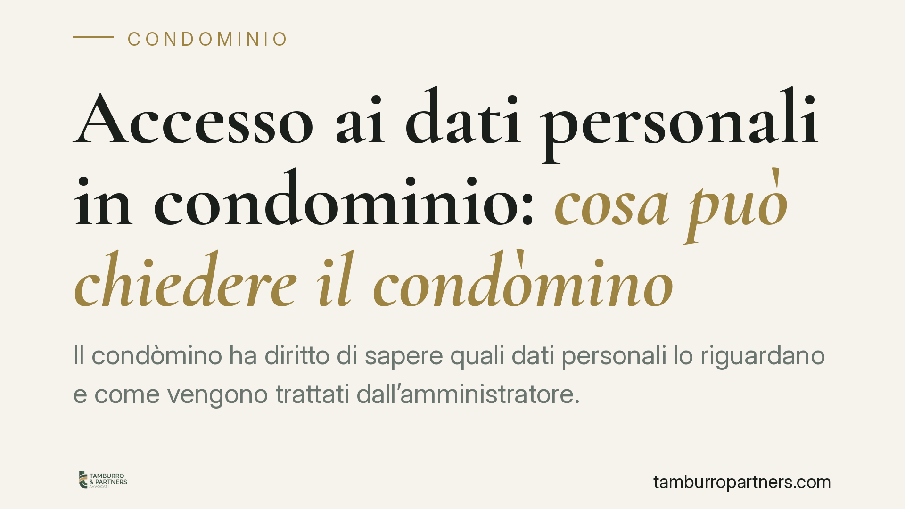

Accesso ai dati personali in condominio: cosa può chiedere il condòmino
Il condòmino ha diritto di sapere quali dati personali lo riguardano e come vengono trattati dall'amministratore. È un diritto garantito dal GDPR, che impone al gestore del condominio di documentare i trattamenti e rispondere in modo puntuale alle richieste di accesso. Un adempimento sempre più rilevante, con risvolti concreti su assemblee, videosorveglianza e morosità.

Il fatto
La questione è ricorrente: un condòmino chiede all'amministratore di sapere quali informazioni che lo riguardano siano state raccolte, come vengano utilizzate e a chi siano state comunicate. La risposta, troppo spesso, è vaga o assente.
Il quadro di riferimento resta il Regolamento (UE) 2016/679 (GDPR), integrato dai provvedimenti consolidati del Garante per la protezione dei dati personali in materia condominiale, a partire dallo storico vademecum "Il condominio" e dalle successive indicazioni dell'Autorità. Non ci risulta, allo stato, un atto autonomo univocamente identificabile come "Linee Guida 2025" sul condominio: ragioniamo quindi sul diritto vigente e sugli orientamenti già acquisiti.
Inquadramento normativo
Il cuore della disciplina è l'art. 15 GDPR, che riconosce all'interessato il diritto di accesso: ottenere conferma che sia in corso un trattamento e, in caso affermativo, conoscere le finalità, le categorie di dati, i destinatari, il periodo di conservazione e l'origine dei dati.
A questo si lega l'art. 12 GDPR, che impone al titolare del trattamento di rispondere in forma concisa, trasparente, intelligibile e, di norma, entro un mese dalla richiesta. Non basta un riscontro generico: la risposta deve essere specifica e verificabile.
Il punto decisivo è l'art. 5, par. 2, GDPR, che sancisce il principio di accountability (responsabilizzazione). Non è sufficiente trattare i dati correttamente: l'amministratore deve essere in grado di *dimostrare* di averlo fatto. In concreto, significa tenere una documentazione ordinata dei trattamenti, delle finalità e delle misure di sicurezza adottate.
Sul piano civilistico, l'art. 1713 cod. civ. rafforza questo dovere. L'amministratore è un mandatario e, come tale, è tenuto a rendere conto del proprio operato. Il dovere di rendiconto non riguarda solo le somme gestite, ma anche la correttezza del trattamento delle informazioni personali dei condòmini.
Cosa cambia in concreto
Per l'amministratore, l'accountability si traduce in un onere probatorio. Davanti a una richiesta di accesso, non può limitarsi a confermare l'esistenza di un trattamento: deve indicare *quali* dati tratta, *perché* e *per quanto tempo* li conserva. L'assenza di documentazione espone al rischio di reclami al Garante e di sanzioni.
Due aree meritano attenzione particolare. La videosorveglianza delle parti comuni comporta il trattamento di immagini: i condòmini devono essere informati sulle finalità, sui tempi di conservazione delle registrazioni e sulle misure di accesso. I tempi di conservazione vanno definiti in modo proporzionato alla finalità, evitando durate ingiustificate. La gestione delle morosità è l'altro punto critico: l'esposizione in assemblea o in bacheca dei nominativi dei morosi è stata ripetutamente sanzionata quando eccede quanto necessario alla gestione condominiale.
### Il limite dell'accesso: i dati dei terzi
Il diritto di accesso del condòmino non è illimitato. L'art. 15 tutela i dati che riguardano *l'interessato richiedente*, non quelli di altri condòmini. Qui si apre un bilanciamento delicato: il singolo può conoscere ciò che lo riguarda, ma non può pretendere, attraverso l'accesso, informazioni personali di terzi non pertinenti alla gestione comune.
L'amministratore deve quindi distinguere. Alcuni dati hanno natura intrinsecamente condominiale e sono accessibili nell'ambito della gestione (ad esempio i riparti di spesa). Altri, invece, appartengono alla sfera privata del singolo condòmino e non possono essere divulgati su richiesta di altri. Negare un accesso eccessivo non è un diniego arbitrario: è la corretta applicazione del principio di minimizzazione.
Cosa fare in concreto
Se sei condòmino:
- Formula la richiesta di accesso per iscritto, specificando che intendi esercitare il diritto ex art. 15 GDPR, e conserva la prova dell'invio.
- Chiedi informazioni puntuali: finalità, categorie di dati, destinatari, tempi di conservazione.
- Se la risposta è assente o generica oltre il termine di un mese, valuta un reclamo al Garante.
Se sei amministratore:
- Predisponi e aggiorna un registro dei trattamenti, con finalità, basi giuridiche e tempi di conservazione.
- Rispondi alle richieste di accesso in modo specifico e documentato, verificando prima l'identità del richiedente.
- Prima di divulgare informazioni, verifica che non comprimano la privacy di altri condòmini.
Consigliamo, sia ai condòmini sia agli amministratori, di formalizzare sempre richieste e riscontri per iscritto: la tracciabilità è il primo presidio in caso di contestazione.
Disclaimer
Contributo informativo a cura di Tamburro & Partners - Avv. Giuseppe Tamburro. Non costituisce parere legale.
Ogni condominio ha una storia a sé.
Se gestisci un'amministrazione e vuoi un confronto su una specifica questione condominiale, scrivi allo studio. Ti rispondiamo entro un giorno lavorativo.